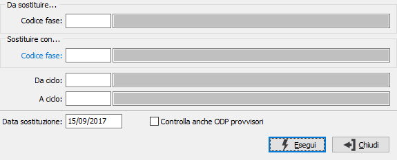

Sostituzione fasi di lavorazione
Il programma consente la sostituzione della fase sulla scheda tecnica e sul ciclo di lavorazione; se la scheda risulta movimentata viene creata una nuova revisione della scheda ed un nuovo ciclo di produzione. Le fasi possono essere sostituite a parità di gruppo fase e di tipologia (interna/esterna).

Vengono richiesti la fase da sostituire e la fase da utilizzare per la sostituzione, i limiti si possono riferire ad un gruppo di cicli di produzione e la data di sostituzione viene utilizzata come parametro per la validità delle schede da elaborare; se viene spuntata la casella Controlla anche ODP provvisori saranno esaminate anche le schede riferite ad ODP provvisori, altrimenti solo quelle relative ad ODP definitivi, oltre le schede non movimentate.